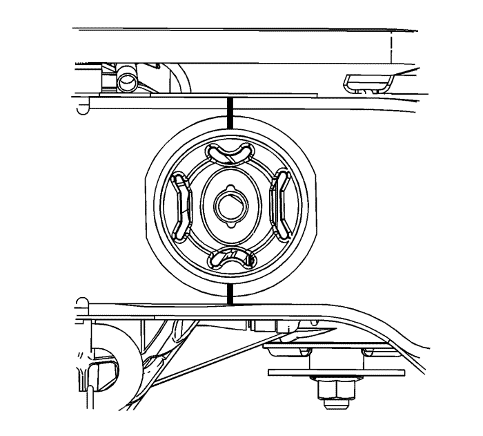
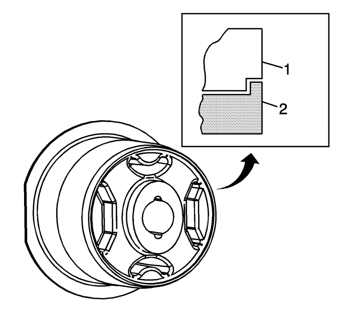
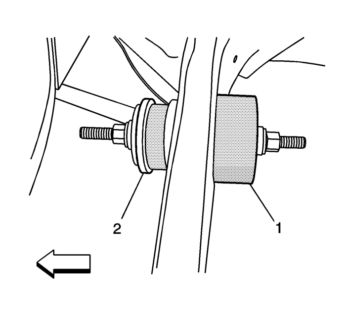
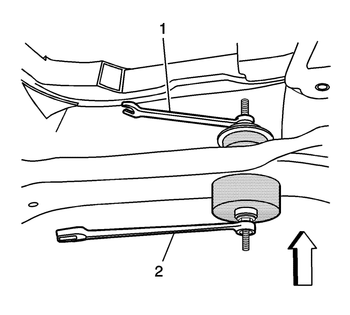
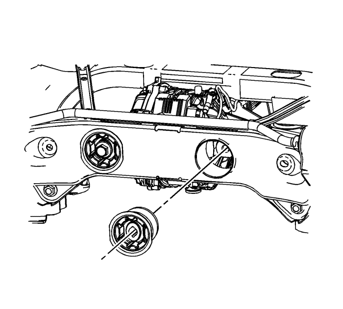
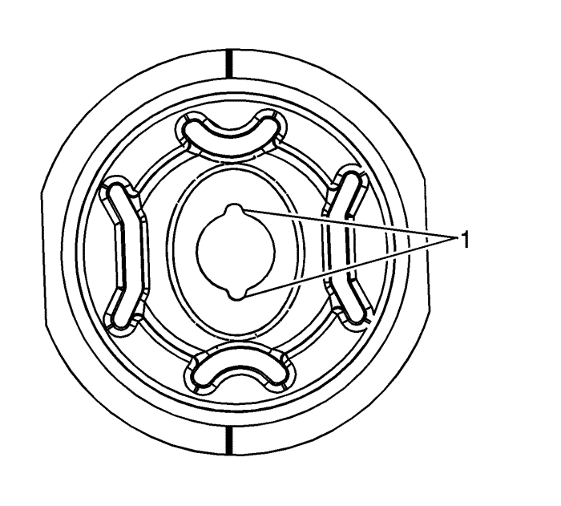
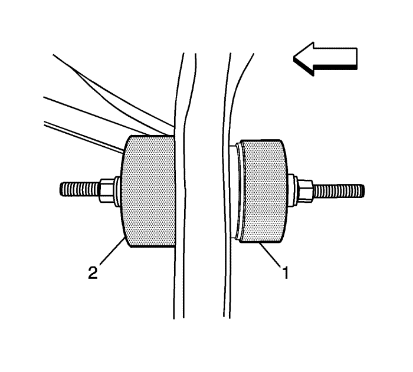
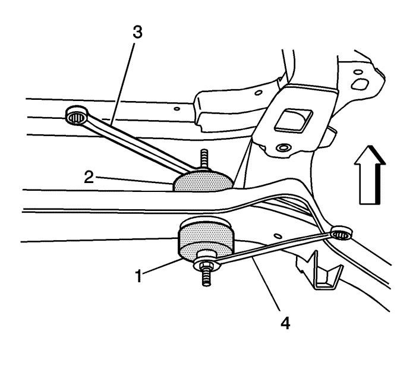

Sustitución del casquillo de soporte de la carcasa del diferencial — Parte trasera
Herramientas requeridas
J-45725 Herramienta de sustitución de casquillo de soporte
Procedimiento de desmontaje
- Elevar el vehículo y soportarlo de manera segura. Consultar Elevación y soporte en alto del vehículo .
- Desmonte el conjunto del diferencial posterior. Consultar Sustitución del diferencial .

- Marque un punto de referencia en el bastidor y el casquillo antiguo en la posición de las 12 y las 6 en punto para utilizar para alinear el nuevo casquillo.

- Coloque la herramienta J-45725-1A (1) en el casquillo (2).
- Coloque la herramienta J-45725-2A (1) en el bastidor.
Importante: Aplique una pequeña cantidad de grasa en la barra roscada para lubricar las tuercas al girarlas.
- Monte la barra roscada, el cojinete y las arandelas.

- Ajuste las tuercas de modo que toquen la herramienta J-45725-1A (2) y la J-45725-2A (1).
- Monte llaves del tamaño adecuado en las tuercas.

Importante: En el procedimiento de servicio siguiente, utilice sólo HERRAMIENTAS DE MANO al utilizar J-45725.
- Mientras sujeta la llave delantera (1) gire la llave trasera (2) para desmontar el casquillo.
- Retire todas las herramientas especiales.

- Desmonte el casquillo del bastidor.
Procedimiento de montaje

Importante: Si no se realiza el servicio siguiente antes de instalar el nuevo casquillo, se podría causar un fallo prematuro del casquillo.
- Antes de instalar el nuevo casquillo, utilice una regla recta para trazar una línea en el nuevo casquillo en las posiciones de las 12 y 6 en punto. Asegúrese de que las ranuras (1) están en las posiciones de las 12 y 6 en punto.
- Coloque el casquillo nuevo de manera que las marcas de referencia del bastidor y el casquillo estén alineadas. De esta manera se asegurará de que el nuevo casquillo se ajuste a la especificación de + o - 5° requerida para la alineación correcta del casquillo.
Importante: El procedimiento siguiente es para fijar temporalmente el nuevo casquillo en su posición para poder instalar las nuevas herramientas para realizar un montaje correcto. Este procedimiento NO debe utilizarse para montar el casquillo.
- Utilice un bloque de madera y un martillo para golpear ligeramente el casquillo en el bastidor.
- Monte la barra roscada, los cojinetes y las arandelas como se indicó en el paso 7 del procedimiento de desmontaje.

- Coloque la herramienta J-45725-4 (2) en el interior del bastidor.
- Coloque la herramienta J-45725-1A (1) en el exterior del bastidor.
- Ajuste las tuercas de modo que toquen la herramienta J-45725-2 (1) y la J-45725-2A (2).

- Mientras sujeta la llave delantera (2) gire la llave trasera (1) para montar el casquillo.
- Retire todas las herramientas especiales.
- Monte el conjunto del diferencial posterior. Consultar Sustitución del diferencial .
- Bajar el vehículo.
| © Copyright Chevrolet Europe. All rights reserved |